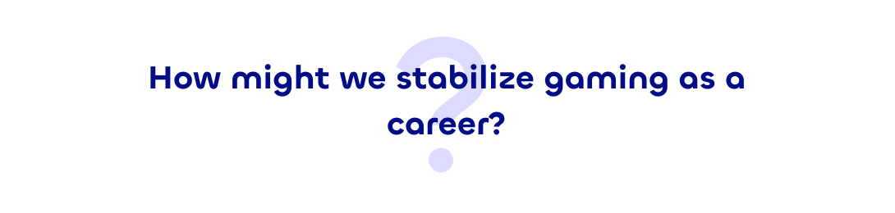
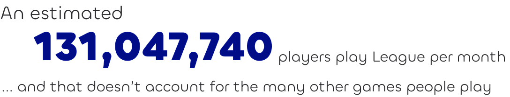
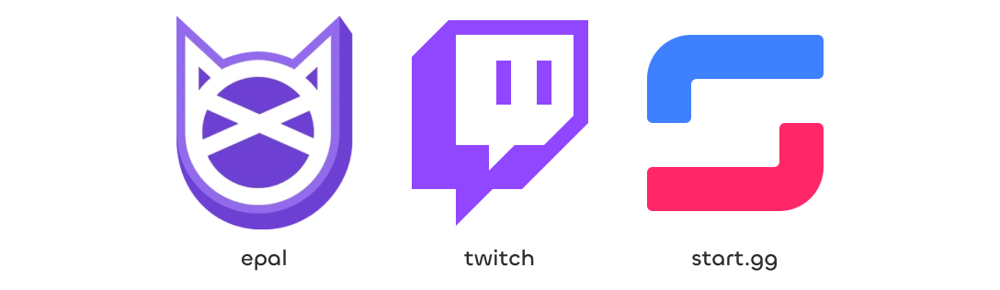
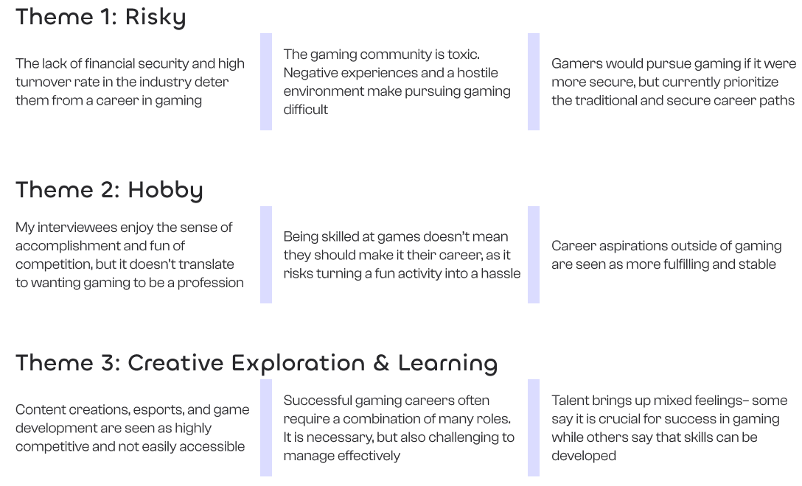
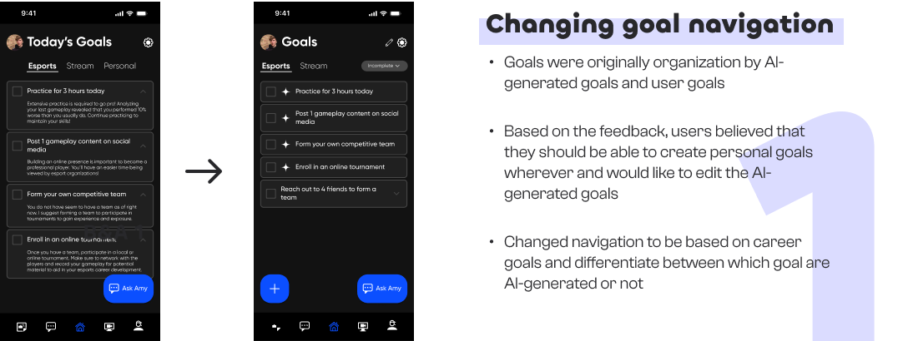
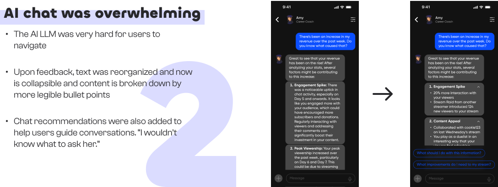
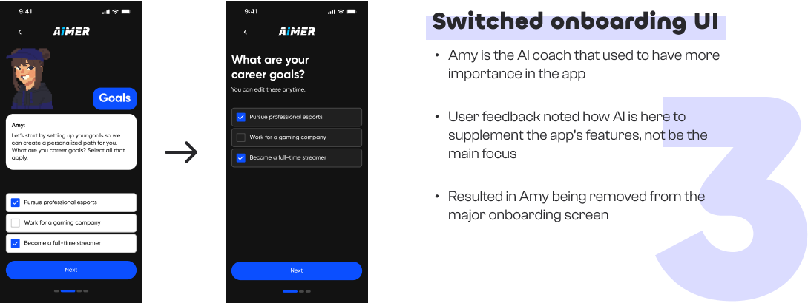

Personal
Figma
Miro
Google Workspace
2 months
Gamers tend to not pursue a career in gaming due to its instability and difficulty of entry. For my own personal project, I designed solutions focused on addressing these pain points identified during the discovery phase. After using the career-building app, 80% of participants who initially didn’t consider gaming as a career reported a change in mindset, expressing increased interest in pursuing gaming as a viable career path.
Kicking off this project, I began to investigate the amount of people who gaming impacts, when I came across an a surprising statistic from ActivePlayer.io:
With that number in mind, I analyzed 3 popular apps for monetization gaming and found that there were virtually no products out there that streamlined the monetization part of gaming. This opportunity became the basis of my solution.
I wanted to see if I was missing any possible alternatives to a career in gaming, so I conducted user interviews with 5 skilled gamers who are currently pursuing a different career. I asked these questions to find out all the options that are out there and how they felt about the industry as a whole, which I then organized into affinity mapping.
Research Questions

Based on the trends in my affinity mapping, I’ve noticed that there are 3 main ways to make a living through gaming, and none them are stable and/or are very difficult to break into. Below are the analyses for my interviews.
After conducting the interviews, I realized that there were a lot of things that were many ways to tackle this problem. I spent 2 weeks exploring various features that I could’ve addressed in my app. There were many things to consider, different user types, compatibility with other products, and personalized coaching. However, I couldn’t tackle everything at once and had to narrow down the options for the initial launch, with additional features being put on low-priority for future implementation.
Based on feedback from 2 other peers and 3 of the previous interviewees, I continuously iterated over my designs across the timespan of 2 weeks and developed 3 major improvements:
  This was my favorite UX project! I’m so happy to have developed this project as it taught me a lot about the design process. Here are some of the key points I’ve learned from this project